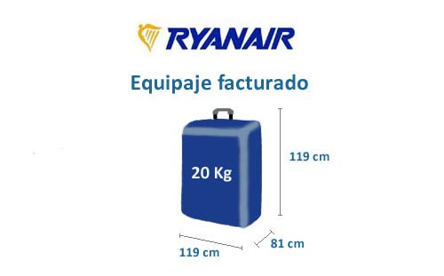
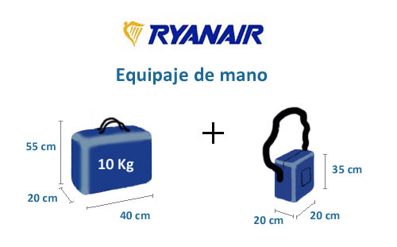

Debes saber que cada pasajero podrá facturaren Ryanair un máximo de 3 maletas. El precio de la tarifa a abonar por el equipaje o maletas facturadas dependerá del peso y cantidad maletas seleccionadas, pudiendo escoger pagar por una franquicia de equipaje con un peso máximo de 15 kg o un peso máximo de 20 kg.
Después de hacer la reserva, podrás añadir el equipaje facturado a la reserva hasta 4 horas antes de la salida programada del vuelo. Los cargos por equipaje facturado se cobran por persona y trayecto, y tienen un descuento cuando se reservan en línea.
Cada pasajero (excepto los bebés) puede llevar a bordo una maleta de mano y una bolsa pequeña (o artículo personal) de forma gratuita.
Las medidas de maleta de mano Ryanair permitidas en cabina por pasajero deberán tener unas dimensiones de 55cmx40cmx20cm, además, el peso máximo por esta maleta de mano será de 10 kilos. La bolsa pequeña no podrá superar en ningún caso las siguientes medidas, 35X20x20 centímetros por pasajero.
Las maletas de cabina extras o de gran tamaño no se podrán aceptar en la puerta de embarque. Si se excede el tamaño de maleta Ryanair considerado para las maletas de cabina, se podrán transportar en la bodega del avión siempre que se abone una tasa adicional (50 euros aproximadamente).
